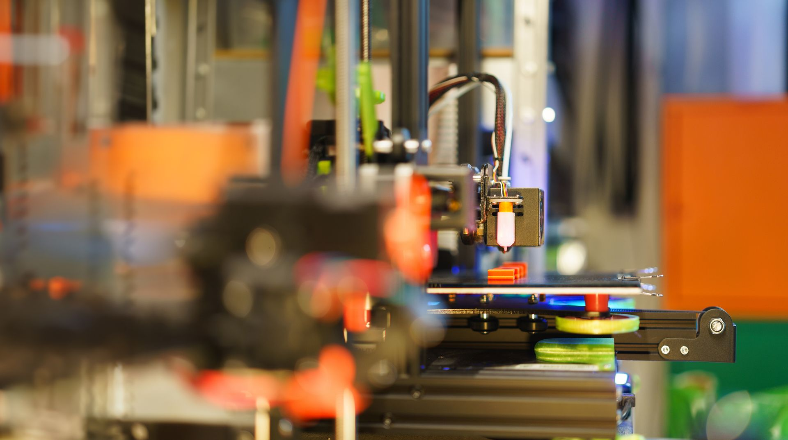
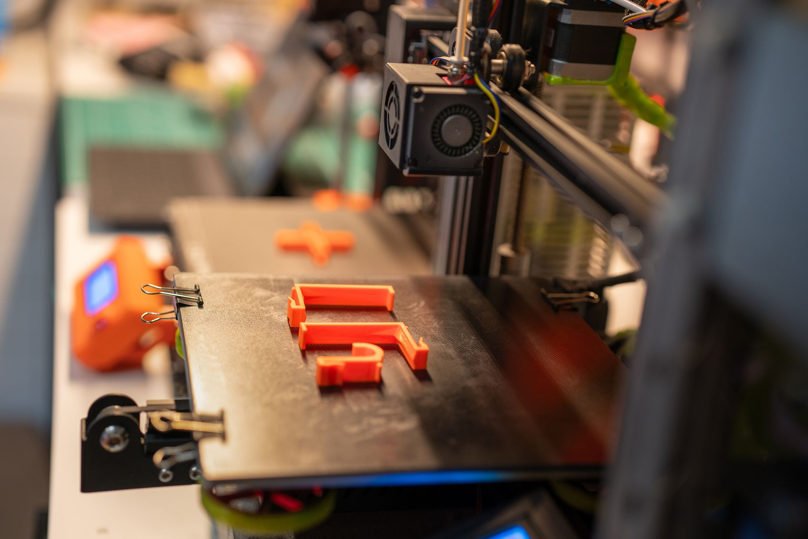
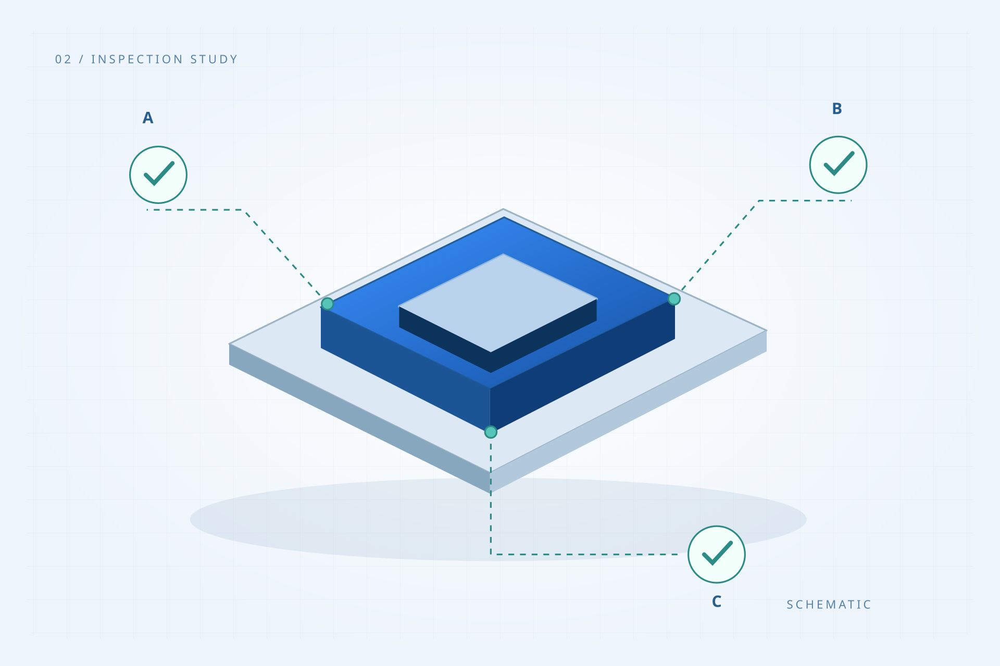
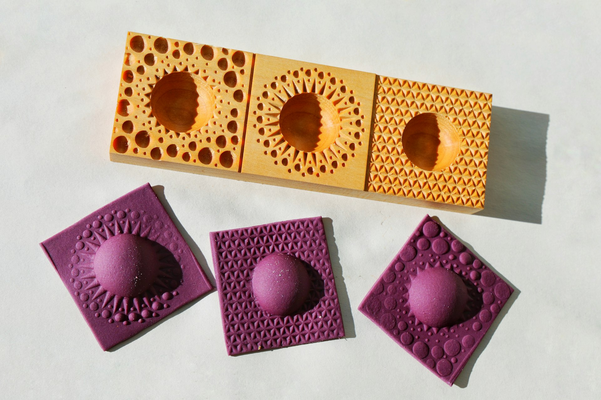
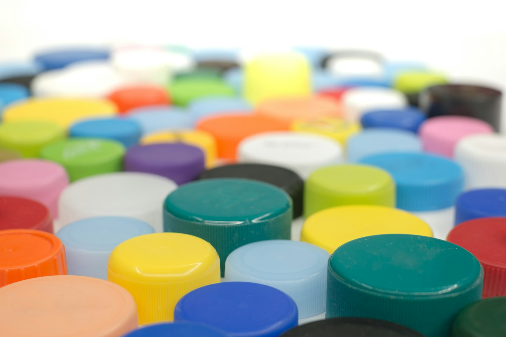

Выпустим пилотную партию пластиковых изделий без затрат на металлическую пресс-форму
Сначала изготавливаем и проверяем прототип, затем выпускаем серию через 3D-печать или силиконовую форму.
Подходит для тестирования продукта, первых продаж, опытной эксплуатации, выставки, сертификации и проверки спроса.
Покажем, что выгоднее для вашего тиража: печать каждого изделия, силиконовая форма или комбинированный маршрут.
Партии от 5 до 300 изделий
FDM/SLA-печать для прототипов и мастер-моделей
Литьё в силикон для повторяемых малых серий
Можно менять конструкцию между партиями
Не нужно сразу вкладываться в металлическую пресс-форму
Для B2B, производителей оборудования, инженерных бюро и стартапов с физическим продуктом

Не вкладывайте деньги в дорогую оснастку до проверки продукта
Металлическая пресс-форма оправдана, когда конструкция уже стабильна, тираж подтверждён, а спрос понятен. На раннем этапе она может быть преждевременной, потому что:
конструкция может измениться после испытаний
нужно проверить несколько вариантов
рынок ещё не подтвердил спрос
партия нужна быстро
тираж слишком мал для окупаемости формы
изделие нужно показать клиенту или инвестору
требуется временная серия до запуска основного производства
Пилотная партия позволяет получить реальные изделия, проверить их в работе и только потом принимать решение о массовой технологии.
Для каких задач подходит пилотная серия
Тестирование нового продукта
Когда нужно проверить изделие в руках пользователя, монтажника, клиента или технической команды.
Первые продажи
Когда нужно продать первые 20–100 изделий и понять реальный спрос.
Испытания и согласования
Когда физические образцы нужны для проверки сборки, эргономики, внешнего вида или эксплуатационных свойств.
Выставка или презентация
Когда нужно показать не рендер, а готовый продукт.
Временная серия
Когда основная пресс-форма ещё изготавливается, но изделия уже нужны.
Сервисный запас
Когда нужно иметь небольшую партию деталей для ремонта и гарантийного обслуживания.
Регулярные малые серии
Когда объём спроса стабильно небольшой, и металлическая пресс-форма не окупается.
Оказываем услуги 3D-печати на всех этапах запуска изделия
3D-печать — это быстрый способ проверить геометрию, посадку, сборку, внешний вид и эргономику изделия до запуска формы. Мы используем 3D-печать в трёх сценариях.
Прототип
Печатаем первую версию изделия, чтобы проверить:
- размеры
- посадку
- сборку
- внешний вид
- внутреннюю компоновку
- удобство эксплуатации
Мастер-модель
Печатаем качественную мастер-модель для последующего изготовления силиконовой формы.
Когда подходит
- нужна серия отливок с более гладкой поверхностью
- требуется повторяемая геометрия
Готовые изделия
Если тираж небольшой или конструкция ещё может меняться, изделия можно производить напрямую на 3D-принтерах. Это особенно удобно для:
- корпусов
- креплений
- оснастки
- технических деталей
- выставочных образцов
- деталей для опытной эксплуатации


FDM-печать
Используется для функциональных деталей, корпусов, оснастки и технических прототипов.
Преимущества
- быстрый запуск
- прочные материалы
- возможность печати крупных деталей
- низкая стоимость изменений
SLA-печать
Используется для детализированных прототипов, гладких визуальных образцов и мастер-моделей.
Преимущества
- высокая детализация
- гладкая поверхность
- точное воспроизведение мелких элементов
- хороший вариант перед изготовлением формы
3D-печать не конкурирует с литьём. Она помогает правильно подготовить изделие к серии и не тратить деньги на форму до проверки конструкции.
Пилотные серии для технических и коммерческих продуктов
Одна задача — несколько производственных маршрутов
Когда выбираем 3D-печать
3D-печать подходит, если:
- нужно 1–10 изделий
- конструкция ещё меняется
- нужно быстро проверить идею
- важна минимальная стоимость запуска
- каждое изделие может отличаться
- допустима поверхность после печати или постобработки
Когда выбираем литьё в силикон
Силиконовая форма подходит, если:
- нужно от 10 до 300 одинаковых изделий
- важен внешний вид
- нужна более гладкая поверхность
- нужно повторение мелких элементов
- требуются жёсткие или эластичные полиуретаны
- печать каждой детали становится дорогой или долгой

Когда используем комбинированный маршрут
Часто лучший вариант:
FDM-печать функционального прототипа
проверка посадки и сборки
SLA-печать мастер-модели
изготовление силиконовой формы
литьё пилотной партии
Что вы получаете
Не просто цену за штуку, а сравнение вариантов:
- стоимость подготовки
- цена изделия
- срок
- качество поверхности
- возможность изменений
- когда технология становится выгодной
Мы показываем не только цену проекта, но и точку, начиная с которой литьё становится выгоднее по сравнению с печатью каждого изделия.
Покажем, что выгоднее для вашего тиража: 3D-печать, силиконовая форма или комбинированный маршрут.
Рассчитать пилотную партиюКак проходит проект
Технический бриф
Анализ модели
Прототип на FDM или SLA
Корректировка
Выбор технологии серии
Мастер-модель
Силиконовая форма
Контрольная отливка
Пилотная серия
Повторный заказ
Серия запускается только после согласования контрольной отливки.
Не просто изделия, а подготовленный производственный маршрут
В зависимости от проекта вы получаете:
Материалы и свойства
Для 3D-печати
- PLA — для макетов и простых образцов
- PETG — для корпусов и функциональных изделий
- ABS/ASA — для технических деталей
- TPU — для гибких элементов
- инженерные материалы — после оценки задачи
- фотополимеры — для детализированных моделей
Для литья в силикон
- жёсткие полиуретаны
- эластичные полиуретаны
- прозрачные полиуретаны
- окрашенные материалы
- специальные составы под задачу
Отдельно согласовываются
- высокие температуры
- контакт с пищей
- контакт с топливом и химией
- медицинское применение
- пожарные требования
- постоянная механическая нагрузка
Одна форма имеет ограниченный ресурс
качественных отливок с одной формы — диапазон для финансового планирования

Ресурс формы зависит от:
- геометрии изделия
- поднутрений
- материала
- сложности извлечения
- качества поверхности
- размера детали
- требований к повторяемости
Для планирования обычно рассматривается диапазон 15–25 качественных отливок с одной формы.
Если нужно 100 изделий, проект может включать несколько одинаковых форм.
Количество форм и ожидаемый ресурс рассчитываются до производства партии.
Почему это выгодно
Для кого эта услуга
Производители оборудования
Для первых корпусов, комплектующих и сервисных партий.
Разработчики электроники
Для корпусов устройств, датчиков, контроллеров и пилотных изделий.
Инженерные бюро
Для производства под проект клиента.
Производители пластмассовых изделий
Для партий, которым ещё рано переходить к металлической пресс-форме.
Стартапы с физическим продуктом
Для проверки продукта до крупных вложений.
Рекламные и выставочные производства
Для нестандартных серий и презентационных объектов.
Один подрядчик от прототипа до партии
Один подрядчик от прототипа до партии
Не нужно отдельно искать конструктора, 3D-печать, литейщика и подрядчика по форме.
Сначала прототип, потом форма
Мы не запускаем форму по непроверенной модели.
Сравниваем технологии
Показываем, когда выгодна 3D-печать, а когда литьё.
Фиксируем контрольный образец
Серия производится после согласования.
Сохраняем производственные данные
Повторный заказ можно запустить быстрее.
Производственная модель
На этапе запуска часть операций может выполняться на квалифицированных партнёрских производственных площадках под нашим техническим сопровождением.
Мы отвечаем за:
техническую проработку
выбор технологии
подготовку модели
производство прототипа
изготовление мастер-модели
координацию формы и литья
контроль партии
коммуникацию с клиентом
Клиент получает единое окно и одного ответственного подрядчика.
Сроки
Ориентиры
| № | Этап | Срок |
|---|---|---|
| 01 | предварительная оценка | до 1 рабочего дня |
| 02 | техническая проработка | от 2 рабочих дней |
| 03 | FDM-прототип | от 2–5 рабочих дней |
| 04 | SLA-прототип или мастер-модель | от 3–7 рабочих дней |
| 05 | силиконовая форма | от 5–10 рабочих дней |
| 06 | пилотная серия | зависит от количества изделий и форм |
Точный срок фиксируется после утверждения модели и производственного маршрута.
Срочные проекты рассматриваются отдельно.
Цена зависит не только от количества изделий
От чего зависит цена
- 01наличие готовой модели
- 02размер изделия
- 03геометрия
- 04материал
- 05поверхность
- 06количество
- 07необходимость мастер-модели
- 08количество форм
- 09объём ручной обработки
- 10требования к цвету и точности
Структура коммерческого предложения
- Техническая подготовка
- Прототип
- Мастер-модель
- Силиконовая форма
- Контрольная отливка
- Цена изделия
- Цена партии
- Цена повторной партии
- Сроки
- Условия оплаты
Ориентиры
технологическая проработка
контрольный прототип
простая силиконовая форма
комплексный проект с пилотной серией
Окончательная стоимость рассчитывается индивидуально.
Предварительно оценим стоимость подготовки, формы, одного изделия и всей партии.
Рассчитать пилотную сериюРассчитайте пилотную партию
Заполните параметры вымышленного изделия и посмотрите, как собирается заявка. Демо работает только на этой странице.
Демо-проект
Об изделии
Демо: ответа менеджера и отправки заявки не будет
Кнопка покажет текст заявки ниже. Используйте вымышленные данные: это интерактивный пример, а не связь с производством.Пример заявки
Результат остаётся на этой странице. Мы ничего не отправляем и не сохраняем в хранилище браузера.
Частые вопросы
01Можно ли начать только с прототипа?
Да. Часто проект начинается с одного FDM- или SLA-прототипа: так вы проверяете геометрию, посадку и внешний вид изделия до запуска формы и не вкладываетесь в дорогую оснастку преждевременно.
02Можно ли заказать только 3D-печать?
Да. Если задача не требует формы, можно изготовить изделие напрямую на 3D-принтере. Это удобно для небольших тиражей, корпусов, оснастки, технических деталей и выставочных образцов.
03Можно ли напечатать мастер-модель?
Да. SLA-печать часто используется для качественных мастер-моделей перед литьём — она даёт высокую детализацию и гладкую поверхность, которая затем воспроизводится в силиконовой форме.
04Как понять, что выгоднее — печать или литьё?
Мы сравниваем стоимость подготовки, цену изделия, срок и требования к поверхности. На основе этого показываем, начиная с какого тиража литьё в силиконовую форму становится выгоднее, чем печать каждого изделия.
05Какой минимальный тираж для литья?
Чаще всего литьё имеет смысл от 10–20 изделий, но всё зависит от геометрии. Для небольшого числа деталей или меняющейся конструкции выгоднее остаться на 3D-печати.
06Можно ли изменить изделие после первой партии?
Да, но для новой версии может потребоваться новая форма. Цифровую модель и мастер-модель мы сохраняем, поэтому повторный запуск с изменениями проходит быстрее, чем разработка с нуля.
07Можно ли получить прозрачные или эластичные изделия?
Да, возможность зависит от материала, геометрии и требований к внешнему виду. Существуют жёсткие, эластичные, окрашенные и прозрачные полиуретаны; требования к оптической прозрачности обсуждаются отдельно.
Проверьте продукт до вложений в массовое производство
Начните с 3D-печатного прототипа, затем при необходимости выпустите пилотную партию через силиконовую форму. После испытаний и первых продаж станет понятно, нужна ли металлическая пресс-форма.